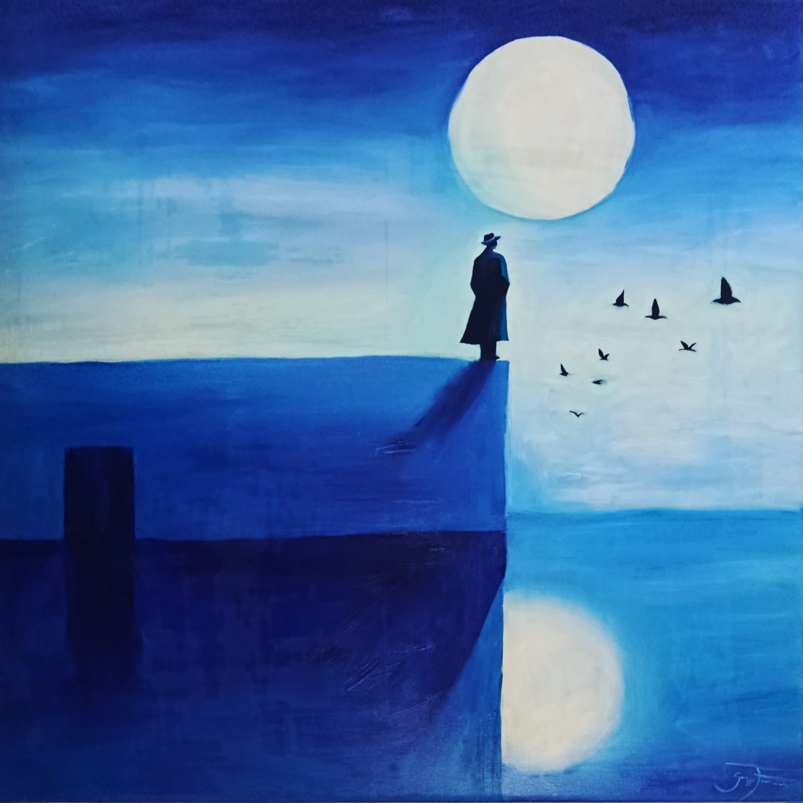

Giuseppe Ferraro
Chi sono
Non ho una scuola alle spalle. Ho cominciato con una tela, dei colori e la voglia di capire cosa riuscivo a farne.
Mi chiamo Giuseppe Ferraro, vivo e dipingo a San Gennaro Vesuviano, nella campagna vesuviana. Non ho seguito un percorso accademico. Ho imparato dipingendo, sbagliando, rifacendo e cercando lentamente un linguaggio che sentissi mio.
Con il tempo alcune cose hanno continuato a tornare.
Le figure essenziali.
Gli animali.
Il mito.
I volti.
E il colore, sempre più libero.
Per molto tempo il blu è tornato spesso nei miei quadri. Oggi la tavolozza si è allargata: ci sono le terre, i rossi, i gialli, colori più caldi.
Non so se sia una direzione definitiva. Probabilmente no. Preferisco che anche il mio modo di dipingere possa cambiare.

Le storie
Nei miei quadri finiscono cose molto diverse. A volte parto da un mito, altre da un volto, da un animale, da un'immagine o semplicemente da qualcosa che mi è rimasto in testa.
Icaro, Prometeo, Medusa, il Minotauro, Orfeo ed Euridice tornano spesso perché sono storie antiche che continuano a parlare di cose molto umane.
La caduta. Il desiderio. La perdita. La paura. Il sentirsi diversi. Il tentativo di superare un limite.
Non mi interessa illustrare fedelmente quelle storie. Quando dipingo Icaro, per esempio, non penso tanto all'eroe mitologico quanto a quello che può esserci di Icaro in una persona qualsiasi.
Ma non tutto deve necessariamente raccontare qualcosa. A volte dipingo un cane, un gatto, un volto o una figura semplicemente perché sento che quell'immagine deve diventare un quadro. E mi sta bene anche non sapere spiegare fino in fondo perché.

Il mio modo di dipingere
Lavoro soprattutto con acrilico e olio su tela. Mi piacciono le forme essenziali, le campiture nette e il colore.
Non cerco il realismo e non mi interessa che un'immagine dica tutto subito. Preferisco togliere, semplificare e lasciare che siano pochi elementi a reggere il quadro.
Alcune opere nascono con un'idea abbastanza precisa. Altre cambiano mentre le dipingo e finiscono molto lontano da dove erano partite. È anche questo che mi interessa della pittura: non avere sempre tutto sotto controllo.

Quello che viene dopo
Non so esattamente dove andrà il mio lavoro. Alcune cose che qualche anno fa sembravano centrali oggi lo sono meno. Ne stanno arrivando altre.
Non sento il bisogno di decidere adesso quale debba essere il mio stile definitivo. Preferisco continuare a dipingere e vedere cosa rimane.